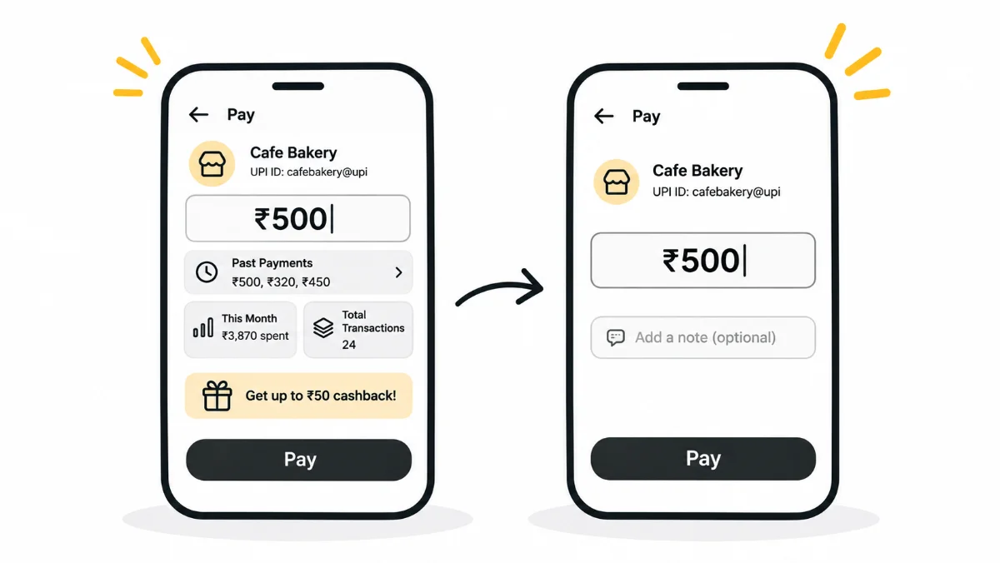

HeuristicsH8Aesthetic and Minimalist Design
They came for the chocolate cake. Don't distract them
Every element you add to a screen competes with every other element. Minimalist design isn't about empty interfaces. It's about protecting the user's focus so they can finish what they came to do.

Welcome to Week 8 of my 10-week series on Nielsen’s Usability Heuristics.
This time, let's talk about a principle that isn't just about beauty. It's about mental clarity.
Heuristic #8: Aesthetic and Minimalist Design
Keep only what's needed. Remove the rest.
Why I Love My Payment App (And Why It Works)
When I use my payment app, I usually have a clear purpose:
Send money or pay bills, quickly and easily.
The core flow is simple:
Scan QR → Enter Amount → Optional Note → Enter UPI PIN → Done
Now, imagine this.
While I'm entering the amount, the app starts showing:
- Today's total transactions.
- All my past UPI payments.
- A long reference number.
- Payment trends.
Sounds like useful information, right?
But here's the problem: it interrupts the moment.
Even if I don't want to read any of it, my brain notices those elements. And now, it takes a little longer to refocus on what I was doing.
In UX, even micro-distractions matter.
Users come to complete a task, not to explore an information jungle.
Psychology Meets Design
UX design isn't just about what looks good. It's also about how the human brain works.
We have limited attention.
The more elements we add to a screen, the more the brain has to filter, ignore, or process.
Even useful information can become a distraction when it's shown at the wrong time.
A clean UI doesn't mean an empty UI. It means a purposeful one.
It helps users focus, complete tasks faster, and avoid unnecessary second-guessing.
That One Time at the Bakery…
Let me share something funny and relatable.
Sometimes, I go to a bakery with just one craving:
Chocolate cake.
But once I step inside, I see all these beautifully displayed items: pastries, muffins, donuts, éclairs…
And my brain goes:
"Oooh… maybe I should try something different today?"
A few times, I've got distracted, picked something else, and regretted it later.
The goal was chocolate cake. But the distractions made me take a detour.
Now, apply the same principle to apps and websites.
Too many buttons, banners, options, offers, or even features can make users lose sight of what they came for.
Not necessarily because the design is bad, but because the focus is broken.
Minimal ≠ Empty
Being minimalist doesn't mean removing everything.
It means:
- Keeping only what's essential to the task.
- Showing relevant information at the right time.
- Giving users enough breathing space to focus.
The goal is simple:
Let users move through your product without unnecessary mental roadblocks.
Key Takeaways
- Every product should guide users towards their goals with as little friction as possible.
- Remove anything that competes with the core task.
- Show information when it's needed, not all at once.
- Don't confuse clean visuals with empty design. Keep it purposeful.
Concluding Thought
Your users aren't here to admire your layout.
They're here to get things done.
Respect their focus. Respect their purpose.
Help them finish what they came to do, quickly and clearly.
Aesthetic and minimalist design isn't just clean. It's kind.